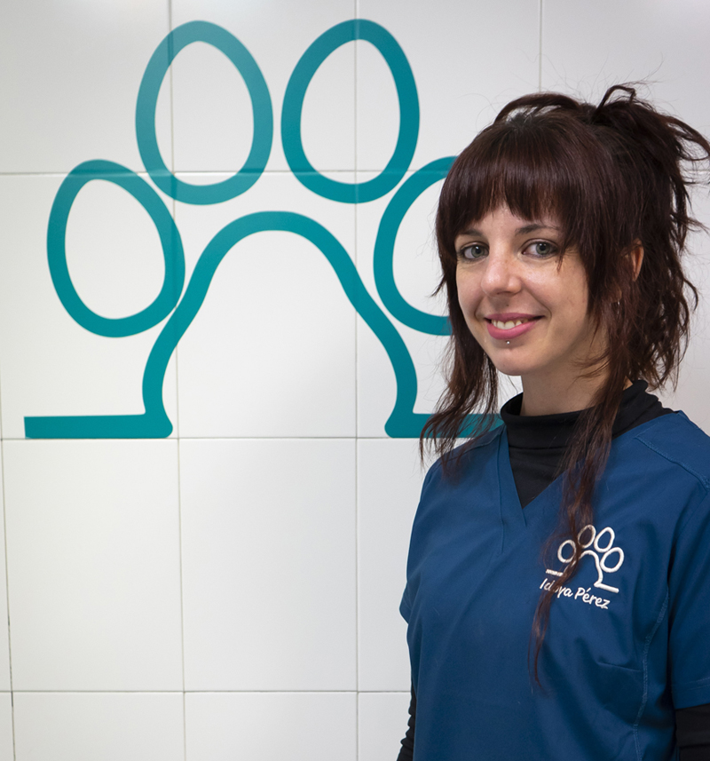
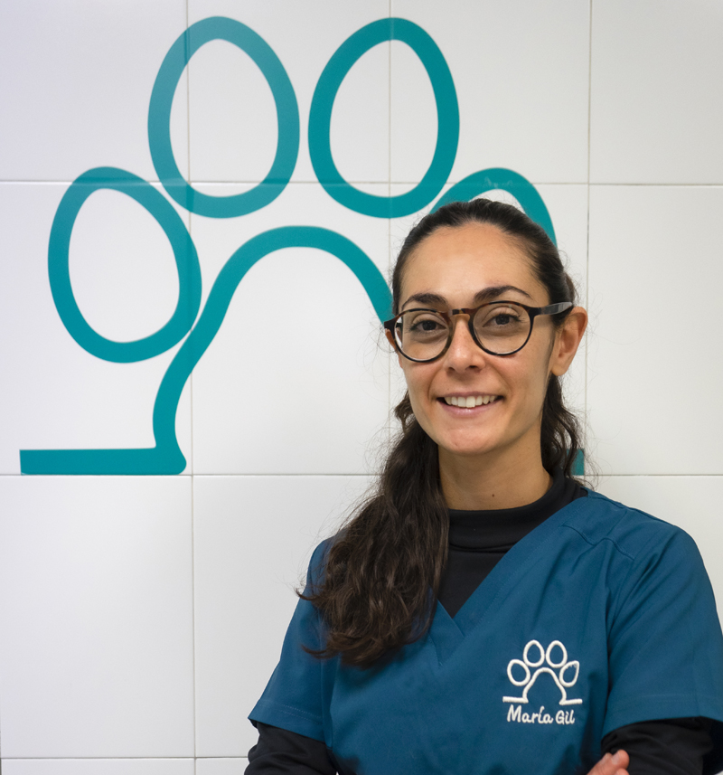
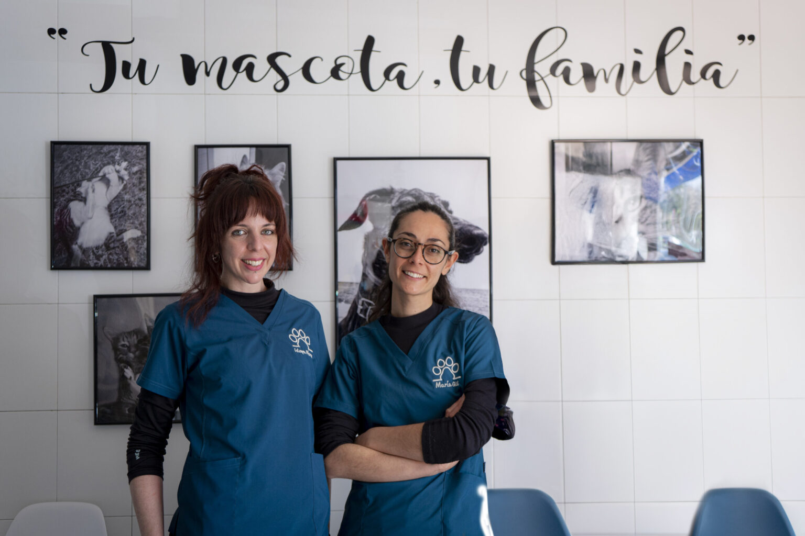

Experiencia, formación avanzada y vocación veterinaria
Especialización clínica, actualización constante y tecnología aplicada garantizan un diagnóstico preciso. Nuestro compromiso es ofrecer medicina veterinaria de máxima calidad y confianza.
Equipo de Veterinarias cualificadas y comprometidas
Muchos de vosotros ya sabiais de la existencia de este proyecto y de la ilusión con la que abrimos la clinica. A los que no nos conocéis somos María e Idoya y estaremos encantadas de atender a vuestros peludos.

Medicina Interna · Diagnóstico por Imagen
Idoya Pérez
- Posgrado de Cirugía Básica de Tejidos Blandos en Pequeños Animales (Universidad Autónoma de Barcelona).
- Curso Básico de Ecografía Abdominal (Hernán Fominaya) – Hospital Veterinario Vetsia, Madrid.
- Miembro activo de AVEPA.
- Actualmente realizando cursos de sus áreas de interés.
- Áreas de interés: Diagnóstico por imagen, laboratorio y citología, Medicina Interna Felina y Canina.

Cirugía · Medicina Felina
María Gil
- Posgrado de Cirugía Básica de Tejidos Blandos en Pequeños Animales (Universidad Autónoma de Barcelona).
- Curso Básico de Ecografía Abdominal (Hernán Fominaya) – Hospital Veterinario Vetsia, Madrid.
- En proceso de acreditación por AVEPA en Medicina Felina.
- Miembro activo de AVEPA, GEMFE e ISFM.
- Áreas de interés: Cirugía y Medicina Interna Felina y Canina.
Nuestros Valores
Profesionalidad
Formación continua y rigor clínico en cada diagnóstico.
Cercanía
Atención personalizada y trato humano para cada familia.
Innovación
Tecnología actual y mejora constante en nuestros procesos.
Compromiso
Nos implicamos en cada caso como si fuera propio.
Confía en nosotros para el cuidado de tu mascota
Solicitar citaTrabajando para la comunidad
Consideramos que la actualización en nuestra profesión es imprescindible para ofrecer el mejor servicio para vuestras mascotas. La formación continua forma parte de nuestro compromiso diario.
